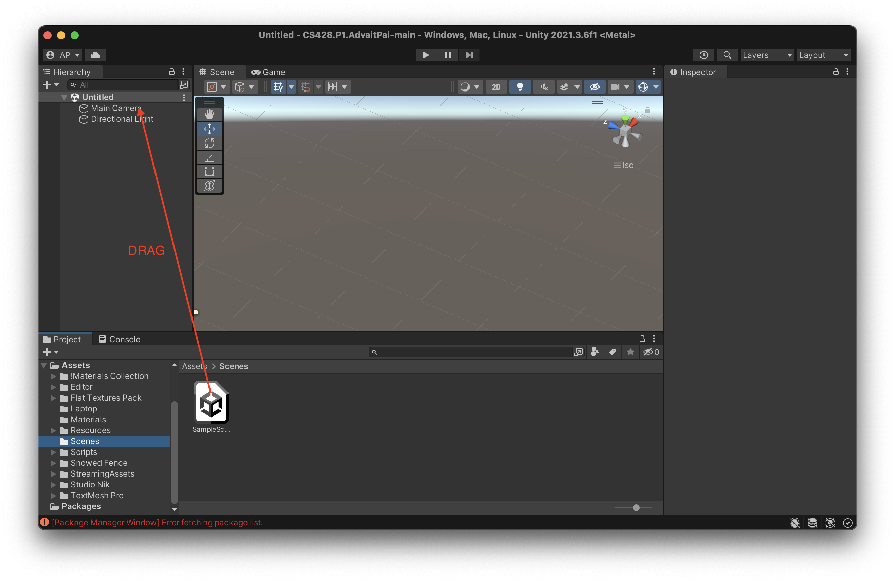
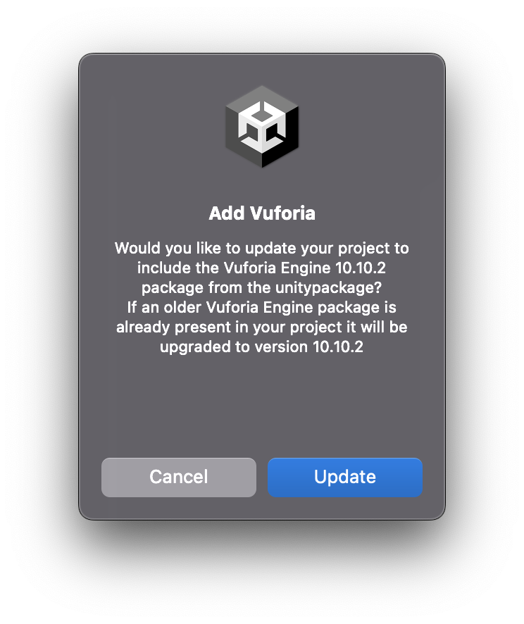

Introduction
When I heard about Virtual, Augmented and Mixed Reality, the only things I knew about this subject were what was I had readon the news and in articles. Wanting to know more, I chose to pursue this in my coursework. I have opted for CS 428 - Virtual, Augmented and Mixed Reality as a part of my coursework. This project entails creating an Augmented Reality based project. The aim of this project is to be able to develop an Augmented Reality Application which will help us demonstrate our skills and understanding of Unity, Vuforia and 3-D modelling other tools available. We have been given two cubes, namely the Merge Cube and the Class Cube, which can be downloaded from the links given. With these cubes we need to build AR objects on top of them in the form of attractions. The key physical attractions in this project are two cubes and a laptop sticker, where one cube holds the Statue of Liberty in New York and the other cube holds a stage of a Coldplay concert.
Choice of Attraction/Models
-
Statue of Liberty (New York):
In the month May 2022, it was my first visit to the United States of America. I have always been entrigued by the country and I was not at all disappointed. The mesmerising beauty of the Statue of Liberty, along with the iconic Yellow Taxis were a highlight for me. Personally, I loved eating the New York Cheescake as well. Hence, you can see where some of my model choices come from. I also intend on visiting New York for Christmas, thus the elements of snow and christmas in the attraction.
-
Coldplay Concert (Mumbai):
Mumbai is my home, a place where I have been born and brought. Before moving to the United States to pursue my masters, in Mumbai I would attend various concerts to satiate my love for music. I have tried to recreate the environment I experienced at a Coldplay concert. The model consistes of a stage and a singer along with lights and piano sounds, to recreate fireworks and music.
Laptop Sticker:
I believe the laptop sticker must hold some significance to the person whose laptop is it. At the same time I feel the AR laptop sticker can also add some additional utility. Hence I have added some of my hobbies and a contact card on the Laptop Sticker.
Requirements
- Unity Hub and Unity (Version 2021.3.6f1) – Installation Link
- Vuforia (Version 10.9 or greater) - Installation Link
- Vuforia License Key - Resource Link
- XCode (Make sure to have the latest version to support iOS16)
- iOS > 12
Installation Guide
-
Access the GitHub using the following link: GitHub Repository
-
Click on code and then “Download ZIP”:

-
Open the Zip and extract its contents to a folder with the structure in the image
-
Open Unity Hub and click on “Open” next to “New Project”. In the File Explorer, navigate to the folder containing the unzipped files. Once found, click “Open”. Make sure your unity version is Version 2021.3.6f1.
-
Once "Unity Package Manager Error" window appears, click on “Continue”. This error occurs due to misconfigured Vuforia. A second prompt "Enter Safe Mode" will appear as a result of this. Click “Ignore” here as well. We will be resolving the error shortly.
-
The project scene window will look empty but we can ignore this too. Now in the Unity Window, on the bottom-left side under the Assets folder, go to “Scenes” and drag “Sample Scene” and replace it with "Untitled Scene". If “Untitled Scene" exists, Right Click and “Remove Scene”.
-
Now we need to import Vuforia, to resolve all errors that were occurring. The download link is available above. Download “Add Vuforia Engine to a Unity Project or upgrade to the latest version”. Once downloaded, double click the file, or drag it to the Unity project. This will open a “Import Unity Package” window. Click “Import”.
-
Now click “Help” in the taskbar and select “Reset Packages to Default”. Once reset, a prompt will appear to “Add Vuforia”. Click “Update”.
-
You may also need to “Link you project to Unity ID”. Complete the steps as well.
-
Now the project environment is setup! It should look like this.
-
Now click on AR Camera. On the right side in the “Inspector”, scroll down and click on “Open Vuforia Configuration”. In the “Add License Key” replace the text with your own license key. You can get one on the Vuforia Developer Website as well
-
Now right below the project title, there is a “Play” symbol which you can click. And hold the cube, and the output should be visible.
Model Citations
Statue of Liberty (New York) Cube:
- Statue of Liberty by Gravity Jack is licensed under Creative Commons Attribution.
- Low Poly Decorated Christmas Tree by lucasbaze is licensed under Creative Commons Attribution.
- US Taxi by Antics3D is licensed under 3D Warehouse: General Model License Agreement.
- Man Serving Cake from Mixamo Quality 3D character animation in minutes. (2022). Retrieved September 2022.
- 4 Snow Materials [High Quality] [Materials Collection] by Danil Piskor is licensed under Standard Unity Asset Store EULA.
- Snowed Fence by Justwo is licensed under Standard Unity Asset Store EULA.
- Magic Christmas by lena_orsa is licensed under licensed under Noncommercial 3.0.
- Cheesecake and Table Made by me using Blender and Unity Shapes
- Snowman Made by me using Unity Shapes

Coldplay Concert (Mumbai) Cube:
- Street Light by KloWorks is licensed under Creative Commons Attribution.
- Low Poly Guitars Pack by studioNik is licensed under Standard Unity Asset Store EULA.
- Singer from Mixamo from Mixamo Quality 3D character animation in minutes. (2022). Retrieved September 2022.
- Lowpoly Textures Pack by N-hance Studio is licensed under Standard Unity Asset Store EULA.
- piano loop.mp3 by Christianjinnyzoe is licensed under Sampling+ License
- Discoball Made by me using Blender
- Stage and Speaker Made by me using Unity Shapes
Laptop Speaker:
- DJ Mixer Lowpoly by gunsk is licensed under Creative Commons Attribution.
- Rocket by Rafa Andrad is licensed under Creative Commons Attribution.
- Lowpoly Textures Pack by N-hance Studio is licensed under Standard Unity Asset Store EULA.
- Free Laptop by Vertex Studio is licensed under Standard Unity Asset Store EULA.
- Contact Card Made by me using Unity Shapes
- Golf Hole Made by me using Unity Shapes
Future of AR & AR Eyewear
Imagine a near-future where everyone does not wear regular spectacles or goggles but rather AR-enabled eyewear. Fascinating? In my opinion, it is subjective. Techno-geeks like me could end up loving such eye wear as it expands the available information in a particular instant. At the same time there could be a whole section who simply would find such technology to be inconvenient them. Also, a user mind is a one that seeks utility rather than fancy technology, hence for AR eyewear to be ‘popular’ it would need to satisfy a consumer need rather than a fancy.
For the popularity to increase, for AR eyewear that can show AR objects, it becomes imperative address some of the following concerns. Can the AR eyewear interfere with the real environment on-demand? Do the AR objects relay real information? And lastly, does the object need AR enhancements in the first place? I believe that AR eyewear will become popular albeit AR objects may not be required. There are certain use cases where AR eyewear could be beneficial like in medicine, or in manufacturing. This will lead to an increase in commercial use of the technology. Another useful use of this could be in tight spaces where there is not much physical space available to display some object. An example could be preschool kids using the cubes (used in this project) as educational tools. Life-like animations could be developed for animals or real world objects and displayed on these tiny cubes, instead of making a trip to the real zoo.
One segment I believe this could be made popular is for individuals who have special needs. Individuals with lowered cognitive functions could simply wear these glasses, and have an array of guided information available to them. For example, if the individual does not know how to use a particular object, a guided AR tutorial could be displayed for the object or an explanation. This could be as simple as a small stop light for crosswalks, where if an individual looks at a red light, the immediate footpath will be coloured red. The only constraint of this would be the information should not confuse the individual rather than assist
AR eyewear could also help when it comes to small object. For an engineer who has to work with small parts, having an eyewear that on seeing this small part will magnify and highlight some key properties of the part could help. But since we also consider the future for our future. In a scenario where AR eyewear are equipped with high precision optics, we could use the technology to recreate microscopic things that are not visible to the naked human eye and make them visible. Scientists in labs could use this to study cultures, or microbes. Even general users could use this to see small objects, with specific applications (because not everything needs AR enhancements). Specific applications like Nature Apps could be developed so that humans could look at small insects like butterflies and have them magnified for their view.
In conclusion, for the popularity and usefulness of these AR eyewear is heavily dependent on the utility that they provide and the amount of information gain they provide. The technologies still need to develop to be market ready.